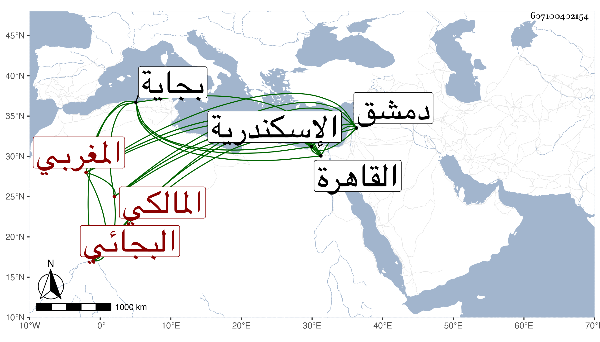

0902Sakhawi.DawLamic.ITO20230111-ara1.EIS1600.607100402154
Biography ID: 607100402154
337
محمد بن عثمان بن ظافر بن علي بن عبد الرحمن أبو عبد الله المغربي البجائي المالكي نزيل اسكندرية . ولد سنة سبع وعشرين وثمانمائة ببجاية وقرأ بها القرآن وتلاه لنافع على محمد بن زين الدين وعنه أخذ العربية والعروض وغيرهما وحضر في الفقه عند المشدالي والد أبي الفضل وغيره ، وحج ودخل دمشق والقاهرة وطوف واستطاب اسكندرية فقطنها مدة وأقرأ المنصور حين إقامته بها في شرح الخزرجية ولقيته بها فكتبت عنه من نظمه ، وكان إنسانا حسنا لديه فضل وأدب وتواضع مع تخيل وانجماع وأظهار لحب الخمول وعدم الشهرة ، وبلغني أنه تزوج إمرأة فاتهم بقتلها وأودع السجن لذلك ثم أطلق بعد سعي شديد فمات من يومه وتوهم كثيرون أنه قتل نفسه وذلك بعد الستين وفي معجمه من نظمه أشياء عفا الله عنه وإيانا .
